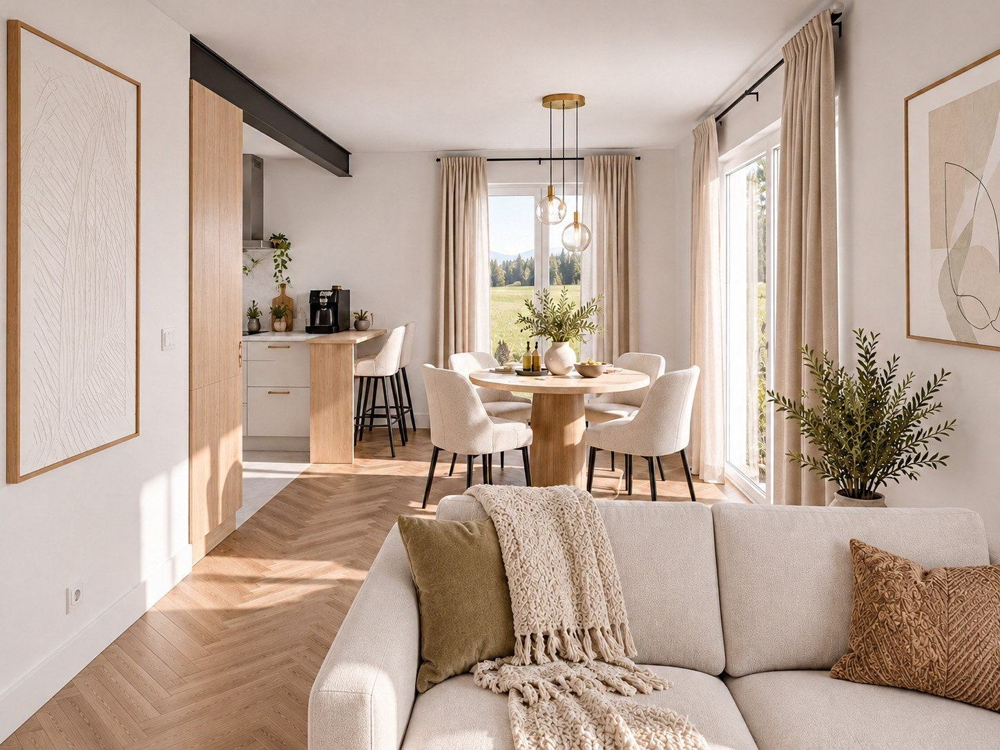
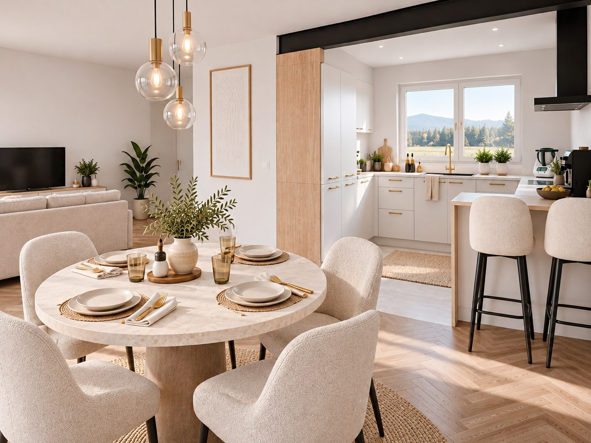

Intérieur résidentiel · Cuisine & séjour
A Study in Light & Balance

Concept
Ce projet explore la relation entre lumière naturelle, couleur et fonctionnalité de l’espace.
Dans un intérieur résidentiel lumineux, doté de larges ouvertures vitrées, la conception visait à créer une atmosphère calme et cohérente, sans surcharger l’espace.
L’agencement existant de la cuisine a été conservé, ce qui a permis de concentrer la réflexion sur deux aspects essentiels : l’élaboration d’une palette de couleurs équilibrée et l’amélioration de l’ergonomie du séjour attenant.
Couleur & Lumière
La lumière naturelle, très présente, est au cœur de l’intérieur : la palette a été pensée pour préserver la sensation de clarté et d’ouverture.
Des tonalités douces et discrètes assurent une continuité visuelle dans tout l’espace et font de la lumière naturelle une part à part entière de la composition.
Il en résulte une atmosphère légère et équilibrée, où les couleurs accompagnent l’architecture au lieu de lui faire concurrence.

Aménagement de l’espace
Une attention particulière a été portée au séjour, où la disposition existante du mobilier limitait la circulation et le confort d’usage au quotidien.
Le nouvel agencement propose une organisation plus intuitive de l’espace, améliore le passage entre les différentes zones et crée un cadre plus accueillant et plus confortable pour la vie de tous les jours.
Chaque élément contribue à une composition spatiale plus claire, dans un juste équilibre entre ouverture, confort et usage pratique.



Atmosphère
L’approche est guidée par la simplicité, la légèreté et l’harmonie visuelle.
Plutôt que de multiplier les contrastes forts ou les éléments décoratifs dominants, le projet s’appuie sur une palette retenue et une organisation réfléchie de l’espace.
Un intérieur lumineux et accueillant, où lumière naturelle, couleurs équilibrées et fonctionnalité améliorée composent une façon de vivre plus confortable.